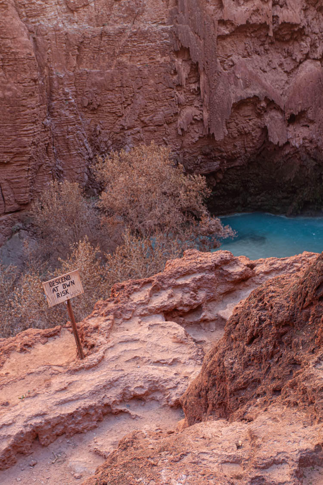
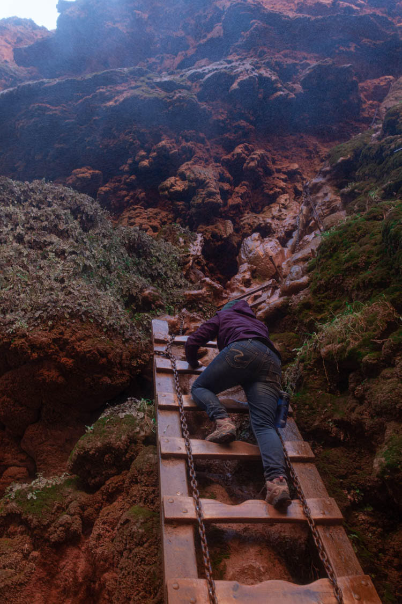

The trailhead for Havasupai Falls is located at Hualapai Hilltop, which is located at the top of the canyon and
about an hour away from Peach Springs, which is the nearest town accessible by car.
The temperatures in the summer can exceed 110 degrees during the day. During this time of year, many
backpackers will start their descent before the sun rises to beat the heat.
Hikers descend 1200 feet over the course of 1/2 mile at the very beginning on your way down and at the very end on your way back. This is the most challenging part of the hike; especially on your way out.
Along the descent you encounter a variety of geological formations and stratification of rock.
After this descent, the trail levels out for the remainder of the 8 mile hike to the village of Supai.
There is no access to water until you hit Havasu creek shortly before you arrive the village.
Visitors should plan accordingly and make sure to pack plenty of water for the hike down. As you enter the town, you'll noticed
two red pillars, known to the Havasupais as Wigleeva, which are believed to guard the tribe. Havasupai legends state that if
these pillars ever fall, the canyon walls will close in and destroy the people.
After you pass through the village of Supai, it is another 2 miles hike (and another 1,200 foot descent)
to two the camping areas. The trail weaves along the creek and passes 2 sets of waterfalls — Fifty Foot Falls
and Havasu Falls. The water flows down these falls into blue green pools. The Supai tribe is dubbed “the people
of the blue green water”. The color of the pools is due to limestone deposits that coat the red clay and rock in
a white film.
The creek splits into two streams shortly before the camping areas and people set up their camps on all sides
of the streams. There are rudimentary bridges to cross the streams at certain points throughout the camping area.
Once you arrive at the campgrounds, you have free range to make camp where you please. There are some picnic
tables scattered throughout for visitor’s use; though some opt to make camp off the beaten path.Fires are not
typically allowed at the campsites, though during our visit at the beginning of February 2020, it was unusually
cold with temperatures dipping down into the teens at night and security allowed campers to have fires.
You can filter the water from the stream to drink, however there is a drinking water source near the campground
to refill at as well.
After you set up camp, spend the rest of your evening resting your feet for the next day of exploring —
you don’t want to miss checking out Mooney Falls, Beaver Falls and beyond.
(Click to enlarge)
Mooney Falls is an additional 1/2 mile hike past the campground. This waterfall 200 feet and absolutely breathtaking.
Some might be comfortable viewing the waterfall from the top, though you have the opportunity to descend the side
of the cliff, and spelunk your way to the bottom. Exercise care when descending; the rocks are slippery. There are
chains that and wooden ladders that you can use to descend, but just know — this section is not for the faint of
heart.


The view is well worth it though!
Just take your time. After you soak in the sights of Mooney Falls, you
can continue to follow Havasu Creek to Beaver Falls as well as the Colorado River.
{kind=link}